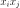
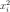
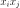
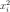
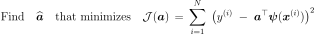

QuadraticLeastSquares¶
- class QuadraticLeastSquares(*args)¶
Second order polynomial response surface by least squares.
- Available constructors:
QuadraticLeastSquares(dataIn, function)
QuadraticLeastSquares(dataIn, dataOut)
- Parameters
- dataIn2-d sequence of float
Input data.
- function
Function Function
 to be approximated.
to be approximated.- dataOut2-d sequence of float
Output data. If not specified, this sample is computed such as: .
See also
Notes
Instead of replacing the model response
 for a local
approximation around a given set
for a local
approximation around a given set  of input parameters as in
Taylor approximations, one may seek a global approximation of
over its whole domain of definition. A common choice to
this end is global polynomial approximation.
of input parameters as in
Taylor approximations, one may seek a global approximation of
over its whole domain of definition. A common choice to
this end is global polynomial approximation.We consider here a global approximation of the model response using a quadratic function:
where denotes the number of terms, is a set of unknown coefficients and the family gathers the constant monomial
 ,
the monomials of degree one
,
the monomials of degree one  , the cross-terms  as
well as the monomials of degree two . Using the vector notation
and
,
this rewrites:
, the cross-terms  as
well as the monomials of degree two . Using the vector notation
and
,
this rewrites:A global approximation of the model response over its whole definition domain is sought. To this end, the coefficients
 may be computed using a
least squares regression approach. In this context, an experimental design
, i.e. a set of realizations of
input parameters is required, as well as the corresponding model evaluations
.
may be computed using a
least squares regression approach. In this context, an experimental design
, i.e. a set of realizations of
input parameters is required, as well as the corresponding model evaluations
.The following minimization problem has to be solved:

The solution is given by:
where:
Examples
>>> import openturns as ot >>> formulas = ['x1 * sin(x2)', 'cos(x1 + x2)', '(x2 + 1) * exp(x1 - 2 * x2)'] >>> myFunc = ot.SymbolicFunction(['x1', 'x2'], formulas) >>> data = [[0.5,0.5], [-0.5,-0.5], [-0.5,0.5], [0.5,-0.5]] >>> data += [[0.25,0.25], [-0.25,-0.25], [-0.25,0.25], [0.25,-0.25]] >>> myLeastSquares = ot.QuadraticLeastSquares(data, myFunc) >>> myLeastSquares.run() >>> responseSurface = myLeastSquares.getMetaModel() >>> print(responseSurface([0.1,0.1])) [0.00960661,0.976781,1.0138]
Methods
Accessor to the object's name.
Get the constant vector of the approximation.
Get the input data.
Get the output data.
getId()Accessor to the object's id.
Get the function.
Get the linear matrix of the approximation.
Get an approximation of the function.
getName()Accessor to the object's name.
Get the quadratic term of the approximation.
Accessor to the object's shadowed id.
Accessor to the object's visibility state.
hasName()Test if the object is named.
Test if the object has a distinguishable name.
run()Perform the least squares approximation.
setDataOut(dataOut)Set the output data.
setName(name)Accessor to the object's name.
setShadowedId(id)Accessor to the object's shadowed id.
setVisibility(visible)Accessor to the object's visibility state.
- __init__(*args)¶
- getClassName()¶
Accessor to the object’s name.
- Returns
- class_namestr
The object class name (object.__class__.__name__).
- getConstant()¶
Get the constant vector of the approximation.
- Returns
- constantVector
Point Constant vector of the approximation, equal to .
- constantVector
- getDataOut()¶
Get the output data.
- Returns
- dataOut
Sample Output data. If not specified in the constructor, the sample is computed such as: .
- dataOut
- getId()¶
Accessor to the object’s id.
- Returns
- idint
Internal unique identifier.
- getLinear()¶
Get the linear matrix of the approximation.
- Returns
- linearMatrix
Matrix Linear matrix of the approximation of the function
.
- linearMatrix
- getMetaModel()¶
Get an approximation of the function.
- Returns
- approximation
Function An approximation of the function
by Quadratic Least Squares.
- approximation
- getName()¶
Accessor to the object’s name.
- Returns
- namestr
The name of the object.
- getQuadratic()¶
Get the quadratic term of the approximation.
- Returns
- tensor
SymmetricTensor Quadratic term of the approximation of the function
.
- tensor
- getShadowedId()¶
Accessor to the object’s shadowed id.
- Returns
- idint
Internal unique identifier.
- getVisibility()¶
Accessor to the object’s visibility state.
- Returns
- visiblebool
Visibility flag.
- hasName()¶
Test if the object is named.
- Returns
- hasNamebool
True if the name is not empty.
- hasVisibleName()¶
Test if the object has a distinguishable name.
- Returns
- hasVisibleNamebool
True if the name is not empty and not the default one.
- run()¶
Perform the least squares approximation.
- setDataOut(dataOut)¶
Set the output data.
- Parameters
- dataOut2-d sequence of float
Output data.
- setName(name)¶
Accessor to the object’s name.
- Parameters
- namestr
The name of the object.
- setShadowedId(id)¶
Accessor to the object’s shadowed id.
- Parameters
- idint
Internal unique identifier.
- setVisibility(visible)¶
Accessor to the object’s visibility state.
- Parameters
- visiblebool
Visibility flag.